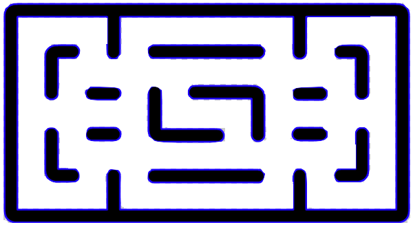
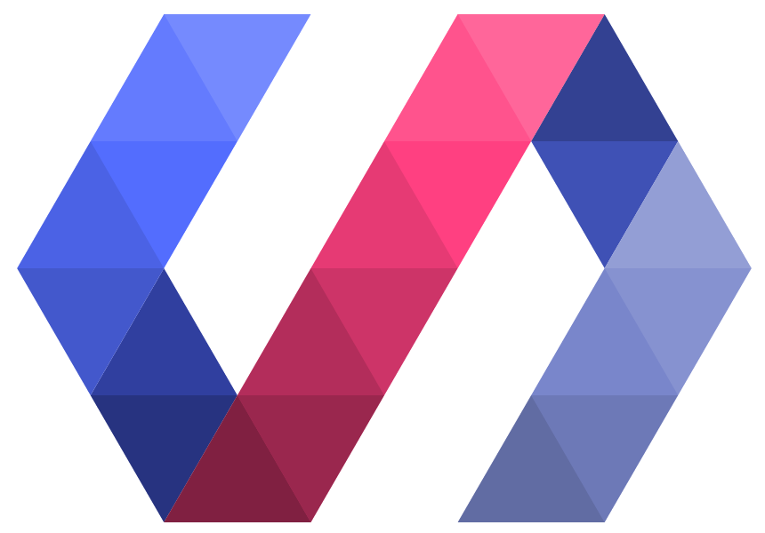
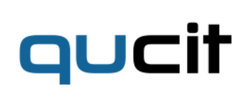
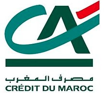
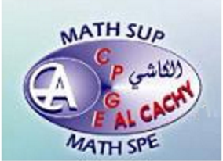

A Propos
Je m'appelle Mohammed Rihani, et je suis un élève ingénieur en Informatique, à l'ENSEIRB-MATMECA de Bordeaux. Ce site est un site vitrine, où je présente quelques uns de mes travaux et où j'écrit des articles sur les technologies que j'ai eu l'occasion d'utliser.

Built with Polymer, By MR
Transport Track
Transport Track est une application mobile pour rediriger les usagers lors des pannes de transport en commun sur le réseau de Bordeaux-Métropole.
Projet
La matrice cachée de Google
Dans le cadre des études en classes préparatoires, et plus précisément l'une des épreuves communes aux concours d'entrée aux grandes écoles, j'ai réalisé le travail d'initiative personnelle encadré (TIPE) autour du thème 2012-2013 : "Invariance et similitude".
Mon projet s'est porté sur l'étude de l'algorithme PageRank de Google,
et notamment de ses mises à jour Google panda et Google pengouin.
Présentation
Inutile de le présenter, Google est le moteur de recherche le plus utilisé au monde. Mais comment les concepteurs de Google font-ils pour classer les milliers de pages se rapportant à un mot-clé donné, de façon telle que les pages les plus représentatives occupent les premières positions du classement ?
Le trait original de ce sujet est très attractif, ce qui explique le choix d'étude du TIPE.
L'objectif de l'étude était de positionner le modèle de L.Page et S.Brin (concepteurs de Google), et d'examiner également l'algorithme PageRank et notamment ses mises à jour : Google panda et Google penguin, en s'appuyant sur des résultats mathématiques combinant théorie des graphes et algèbre linéaire (théorème de Perron-Frobenius...).
Lien avec le thème
L'aspect de l'invariance se manifeste dans plusieurs étapes de l'étude et notamment en ce qui concerne la matrice de Google. En effet, les puissances de cette matrice deviennent invariantes à partir d'un certain rang.
Présentation de l'étude
Énoncé du projet
Polymer / Material Design
 Création de nouvelles expériences via le WebPolymer est un framework web open-source, développé par Google permettant de créer rapidement des applications web à l'aide de composants préexistants. Comme d'autres frameworks tels que X-Tag (Mozilla), Polymer repose sur les Web Components. Il s'agit d'une nouvelle spécification standardisée récemment par le W3C permettant la création de composants HTML indépendants et réutilisables.
Les Web Components visent à changer la façon dont nous construisons des applications Web en permettant aux développeurs d'étendre le vocabulaire HTML en créant leurs propres éléments HTML réutilisables. Ce moyen simple en apparence donne la possibilité de construire des application web en se basant sur des composants complexes déjà créés.
Les frameworks de l'interface utilisateur à base de composants ont été le moyen standard de construire des applications natives complexes pendant des années, et de nombreux frameworks web comme angulare et Vaadin nous donnent la possibilité de composer notre interface de blocs réutilisables. La grande différence entre ces approches et les composants Web est que les composants Web amènent la composition à un niveau de DOM afin que les éléments personnalisés peuvent être utilisés avec tout framework comme tout élément HTML standard.
Un des grands avantages des Web Components est qu'ils nous permettent de construire des applications en se basant sur des modules existants, au lieu de réinventer la roue.
La plupart des applications utilisent un ensemble assez standardisé des contrôles d'interface utilisateur - des composants tels que les tableaux de données, sélecteurs de date, les champs de saisie, etc. En utilisant un composant existant, non seulement on économise du temps dans la construction de l'application, mais on n'a pas besoin de passer du temps en maintenance à l'avenir. Car on peut profiter de l'expansion des Web components et ainsi des avancements de la communauté qui contribuent aux corrections de bugs et aux améliorations des performances du même composant - résultant en un meilleur composant pour tous les utilisateurs.
Polymer encapsule trois langages différents dans ses librairies (HTML, CSS et JavaScript). Les éléments intégrés dans les librairies ont pour objectif de favoriser la création sur navigateur internet d’expériences similaires à celles des applications mobiles avec les « Web apps ». Polymer met l’accent également sur la rapidité de développement et la ré-utilisation du code.
Par ailleurs, Polymer s’appuie sur les codes propres au Material Design, le langage visuel introduit par Google à l’occasion du lancement d’Android Lollypop (Android 5.0). Il vise à unifier l’expérience utilisateur avec une charte graphique commune. Disponible sur Google.com/design, ce nouveau langage visuel est une réinterprétation du flat design, mais qui apporte des nouveautés non négligeables, son précédent nom de code était « Quantum Paper » (on en trouve d’ailleurs quelques références dans la documentation).
Mohammed Rihani
Etudiant ENSEIRB-MATMECA Bordeaux
Bordeaux, Aquitaine, France | Technologies et services de l'informationExpériences
Transport Track
Qucit
octobre 2015 - mars 2016 (6 mois) | Région de Bordeaux, France
Développement du code client et portage multiplatforme de l'application hybrid Transport Track en collaboration avec la start up Qucit incubée à l'incubateur Régional d'Aquitaine (Utilisation de Polymer, Material Design et Apache Cordova, Méthode de management : Agile Scrum).
Guichet, Arrière guichet
CREDIT DU MAROC
juin 2014 - juillet 2014 (1 mois) | Fès Dar Dbibegh, Maroc
Stage de découverte, service commercial et informatique au sein d'une succursale de la banque Crédit du Maroc (Fès Dar Dbibegh), banque filiale de Crédit Agricole au Maroc.
Formation
ENSEIRB-MATMECA
Informatique
2013 - 2017
Options :
Activités et associations :
CPGE Al Cachy Fes
Classes préparatoires aux grandes écoles (MPSI/MP*)
2011 - 2013
Contact
Si vous voulez me contacter à propos d'un projet ou , je serai ravi de vous répondre. Envoyez moi un mail au : mrihani@enseirb-matmeca.fr ou un message via le formulaire de contact.
TRANSFERER